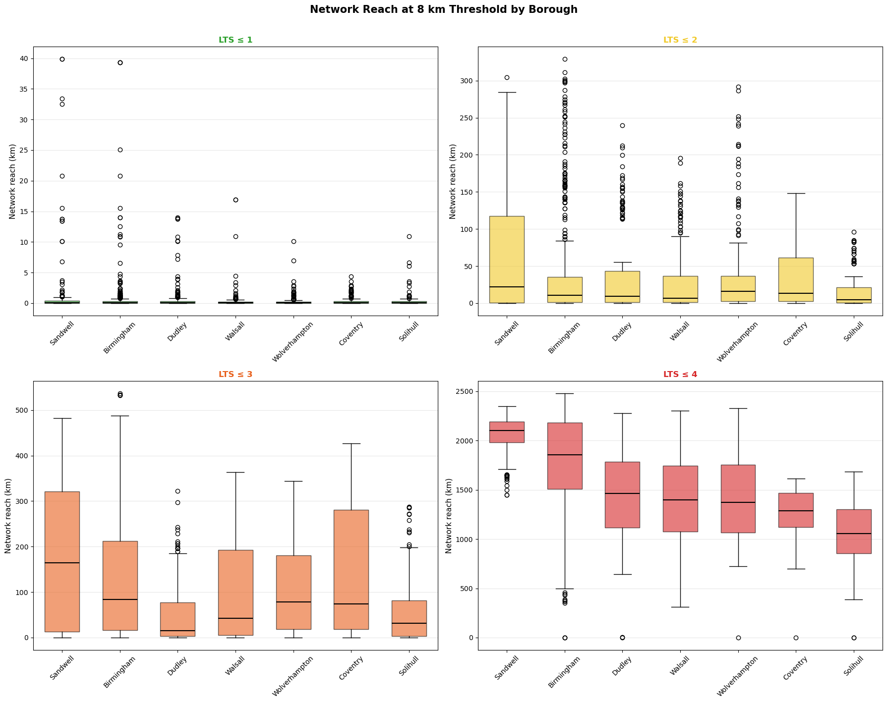

This Section computes network reach — the total length of cycling network reachable from each LSOA centroid within a given distance threshold — for the West Midlands directed LTS network. Network reach captures the interplay between network density and connectivity (Peponis et al., 2008): it measures not only whether a destination can be reached, but the breadth of routes and locations accessible from a given origin.
The analysis focuses on an 8 km (~5 mile) distance threshold, reflecting LTN 1/20’s observation that two-thirds of all trips are within this distance and therefore represent the primary catchment for cycling as a mode substitute (DfT, 2020).
Key methodological features: - Directed graph: reach is computed on the directed network, following legal travel directions, consistent with the directed LTS classification framework. - Forward reachability: from each origin node, only edges traversable in the forward direction are followed — the directed analogue of the connected component approach used in undirected studies (Vierø et al., 2024). - Physical-road deduplication: directed edges sharing the same physical road segment (identified by osid) are counted only once, ensuring reach reflects accessible physical infrastructure rather than inflated directed-edge counts. - Gap closing: 30 m gaps between edges of the same LTS level are bridged before reach computation, following Vierø et al. (2024) and Schoner & Levinson (2014), to mitigate artificial fragmentation from mapping imprecision. - LSOA aggregation: results are aggregated to Lower Layer Super Output Areas (LSOAs) to enable comparison with Census commuting data and deprivation indices.
Code
import warningswarnings.filterwarnings('ignore')import osfrom pathlib import Pathimport numpy as npimport pandas as pdpd.set_option('display.max_columns', None)pd.set_option('display.width', 1000)pd.set_option('display.max_colwidth', None)import geopandas as gpdimport networkx as nxfrom scipy.spatial import cKDTreefrom collections import defaultdictimport matplotlib.pyplot as pltimport matplotlib.colors as mcolorsimport matplotlib.ticker as mtickerfrom matplotlib.lines import Line2Dfrom matplotlib.colors import LinearSegmentedColormapimport matplotlib.patches as mpatchesfrom shapely.geometry import Point, LineString, Polygonimport contextily as cx# PySAL for spatial autocorrelationfrom esda.moran import Moran, Moran_Localfrom libpysal.weights import KNNDATA_DIR = Path('../Data/Raw')CLEANED_DIR = Path('../Data/Cleaned')OUTPUT_DIR = Path('../Data/Cleaned')FIG_DIR = Path('../Figures')FIG_DIR.mkdir(exist_ok=True)CRS_BNG ='EPSG:27700'
1. Configuration
1.1 Analysis Parameters and LTS Colour Scheme
Code
# ----- Analysis parameters -----REACH_THRESHOLD_M =8000# 8 km ≈ 5 miles (LTN 1/20 benchmark)LTS_LEVELS = [1, 2, 3, 4] # cumulative: LTS ≤ LGAP_CLOSE_M =30# max gap to bridge between same-LTS edges# ----- LTS colour scheme (consistent across all notebooks) -----LTS_COLORS = {1: '#2ca02c', # green — low stress2: '#f0c929', # yellow — moderate3: '#e8601c', # orange — high stress4: '#d62728', # red — very high stress}# Sequential colormaps per LTS level (white → LTS colour)LTS_CMAPS = {}for lts, color in LTS_COLORS.items(): LTS_CMAPS[lts] = LinearSegmentedColormap.from_list(f'lts{lts}', ['#f7f7f7', color] )# Study area boroughsSTUDY_AREA_BOROUGHS = ['Birmingham', 'Coventry', 'Dudley', 'Sandwell','Solihull', 'Walsall', 'Wolverhampton',]print(f"Distance threshold: {REACH_THRESHOLD_M/1000:.0f} km ({REACH_THRESHOLD_M/1609:.0f} miles)")print(f"LTS levels (cumulative): LTS ≤ {LTS_LEVELS}")print(f"Gap closing threshold: {GAP_CLOSE_M} m")
Distance threshold: 8 km (5 miles)
LTS levels (cumulative): LTS ≤ [1, 2, 3, 4]
Gap closing threshold: 30 m
LSOAs in West Midlands: 1,718
By borough:
LAD25NM
Birmingham 659
Coventry 203
Dudley 203
Sandwell 191
Solihull 134
Walsall 167
Wolverhampton 161
Name: count, dtype: int64
3. Directed Graph Construction
3.1 Build Base Directed Graph
Each directed edge carries its osid (the underlying physical road segment identifier). This is critical for the deduplication step in reach computation: when a bidirectional road produces two directed edges (_F and _R), both share the same osid, and the physical road length is counted only once.
Code
def build_directed_graph(edges_gdf):"""Build a NetworkX DiGraph from the directed edges GeoDataFrame.""" G = nx.DiGraph() node_coords = {}for _, row in edges_gdf.iterrows(): u = row['from_node'] v = row['to_node'] geom = row['geometry'] G.add_edge(u, v, length=row['geometry_length_m'], lts=row['lts_final'], facility_type=row['facility_type'], edge_id=row['edge_id'], osid=row['osid']) coords =list(geom.coords)if u notin node_coords: node_coords[u] = coords[0][:2]if v notin node_coords: node_coords[v] = coords[-1][:2] nx.set_node_attributes(G, {n: {'x': c[0], 'y': c[1]} for n, c in node_coords.items()})return G, node_coordsG_full, node_coords = build_directed_graph(edges)print(f"Full directed graph:")print(f" Nodes: {G_full.number_of_nodes():,}")print(f" Edges: {G_full.number_of_edges():,}")
Full directed graph:
Nodes: 253,548
Edges: 478,430
3.2 Extract Cumulative LTS Subgraphs
Code
def extract_lts_subgraph(G, max_lts):"""Extract directed subgraph containing only edges with lts <= max_lts.""" edge_list = [(u, v, d) for u, v, d in G.edges(data=True) if d['lts'] <= max_lts] H = nx.DiGraph() H.add_edges_from(edge_list)for n in H.nodes():if n in G.nodes: H.nodes[n].update(G.nodes[n])return Hlts_subgraphs = {}for lts_level in LTS_LEVELS: H = extract_lts_subgraph(G_full, lts_level) lts_subgraphs[lts_level] = H total_length_km =sum(d['length'] for _, _, d in H.edges(data=True)) /1000 n_osid =len(set(d['osid'] for _, _, d in H.edges(data=True)))print(f"LTS ≤ {lts_level}: {H.number_of_nodes():>7,} nodes, "f"{H.number_of_edges():>7,} dir. edges, "f"{n_osid:>7,} phys. segments, "f"{total_length_km:>8,.1f} km dir. length")
LTS ≤ 1: 191,638 nodes, 226,475 dir. edges, 146,139 phys. segments, 9,954.5 km dir. length
LTS ≤ 2: 222,328 nodes, 378,021 dir. edges, 199,744 phys. segments, 18,021.6 km dir. length
LTS ≤ 3: 239,162 nodes, 424,402 dir. edges, 226,127 phys. segments, 20,200.2 km dir. length
LTS ≤ 4: 253,548 nodes, 478,430 dir. edges, 257,210 phys. segments, 23,151.9 km dir. length
4. Gap Closing
Dedicated cycling infrastructure is often mapped with geometric imprecision at intersections (Schoner & Levinson, 2014; Vierø et al., 2024). We close gaps of up to 30 m between edges of the same LTS level in different weakly connected components, adding bidirectional bridging edges.
Code
def close_gaps_directed(G, node_coords, max_gap_m, lts_level):"""Close gaps of up to max_gap_m between disconnected components.""" nodes_in_graph = [n for n in G.nodes() if n in node_coords]iflen(nodes_in_graph) <2:return0 node_list =list(nodes_in_graph) coords_array = np.array([node_coords[n] for n in node_list]) tree = cKDTree(coords_array) pairs = tree.query_pairs(r=max_gap_m) comp_map = {}for comp_id, comp inenumerate(nx.weakly_connected_components(G)):for n in comp: comp_map[n] = comp_id gaps_closed =0for i, j in pairs: u, v = node_list[i], node_list[j]if comp_map.get(u) == comp_map.get(v):continueif G.has_edge(u, v) and G.has_edge(v, u):continue dist = np.linalg.norm(coords_array[i] - coords_array[j])ifnot G.has_edge(u, v): G.add_edge(u, v, length=dist, lts=lts_level, facility_type='gap_bridge', edge_id=f'gap_{u}_{v}', osid=f'gap_{u}_{v}')ifnot G.has_edge(v, u): G.add_edge(v, u, length=dist, lts=lts_level, facility_type='gap_bridge', edge_id=f'gap_{v}_{u}', osid=f'gap_{u}_{v}') gaps_closed +=1 old_comp = comp_map[v] new_comp = comp_map[u]for n inlist(comp_map.keys()):if comp_map[n] == old_comp: comp_map[n] = new_compreturn gaps_closedprint(f"Gap closing (max {GAP_CLOSE_M} m):")print("-"*65)for lts_level in LTS_LEVELS: H = lts_subgraphs[lts_level] n_comps_before = nx.number_weakly_connected_components(H) n_gaps = close_gaps_directed(H, node_coords, GAP_CLOSE_M, lts_level) n_comps_after = nx.number_weakly_connected_components(H)print(f"LTS ≤ {lts_level}: {n_gaps:>5,} gaps closed | "f"Components: {n_comps_before:>6,} → {n_comps_after:>6,} "f"({n_comps_before - n_comps_after:>5,} merged)")
Network reach from an origin node \(o\) at distance threshold \(d\) is:
\[R(o, d) = \sum_{s \in S_d(o)} \ell(s)\]
where \(S_d(o)\) is the set of unique physical road segments (osid) reachable from \(o\) within network distance \(d\), and \(\ell(s)\) is the length of segment \(s\).
A directed edge \((u, v)\) with osid\(s\) contributes to reach if its start node \(u\) is reachable within \(d\). The contributed length is \(\min(\ell_e, d - d_u)\) where \(d_u\) is the shortest-path distance to \(u\) (partial edge counting, following Peponis et al., 2008).
Deduplication: when the same physical road appears as both A→B and B→A (i.e., both directed edges share the same osid), only the maximum partial contribution is retained. This ensures that a bidirectional road is counted once regardless of how many of its directed edges have reachable start nodes.
Code
def compute_reach_from_node(G, source, threshold_m, weight='length'):""" Compute directed network reach from a single source node, with deduplication by osid (physical road segment). Returns reach in metres. """if source notin G:return0.0try: dist_to_nodes = nx.single_source_dijkstra_path_length( G, source, cutoff=threshold_m, weight=weight )except nx.NetworkXError:return0.0# For each physical segment (osid), keep max partial contribution osid_reach = {}for u, v, data in G.edges(data=True):if u notin dist_to_nodes:continue d_u = dist_to_nodes[u]if d_u >= threshold_m:continue edge_len = data[weight] contributed =min(edge_len, threshold_m - d_u) osid = data.get('osid', data.get('edge_id', f'{u}_{v}'))# Keep max contribution per physical segmentif osid notin osid_reach or contributed > osid_reach[osid]: osid_reach[osid] = contributedreturnsum(osid_reach.values())# Testtest_node = lsoa_nearest_df.iloc[0]['nearest_node']for lts in LTS_LEVELS: r = compute_reach_from_node(lts_subgraphs[lts], test_node, REACH_THRESHOLD_M)print(f"LTS ≤ {lts}: {r/1000:.2f} km reachable (first LSOA, 8 km threshold)")
LTS ≤ 1: 0.07 km reachable (first LSOA, 8 km threshold)
LTS ≤ 2: 0.07 km reachable (first LSOA, 8 km threshold)
LTS ≤ 3: 223.25 km reachable (first LSOA, 8 km threshold)
LTS ≤ 4: 2035.03 km reachable (first LSOA, 8 km threshold)
print("="*75)print(f"Network Reach Summary — 8 km Threshold (physical road km reachable)")print("="*75)print(f"{'LTS':>8}{'Mean':>8}{'Median':>8}{'Std':>8}{'Min':>8}{'Max':>8}{'Zero%':>7}")print("-"*75)for lts in LTS_LEVELS: col =f'reach_km_lts{lts}' s = lsoa_reach[col] pz = (s ==0).mean() *100print(f"{'≤ '+str(lts):>8}{s.mean():>8.1f}{s.median():>8.1f} "f"{s.std():>8.1f}{s.min():>8.1f}{s.max():>8.1f}{pz:>6.1f}%")print(f"\nReach ratio (LTS ≤ 2 / LTS ≤ 4):")rr = lsoa_reach['reach_ratio']print(f" Mean: {rr.mean():.3f} | Median: {rr.median():.3f} | Std: {rr.std():.3f}")
===========================================================================
Network Reach Summary — 8 km Threshold (physical road km reachable)
===========================================================================
LTS Mean Median Std Min Max Zero%
---------------------------------------------------------------------------
≤ 1 0.7 0.1 3.0 0.0 39.9 37.0%
≤ 2 37.5 10.6 61.4 0.0 329.2 9.5%
≤ 3 112.4 61.3 119.1 0.0 536.8 4.2%
≤ 4 1580.9 1593.0 505.8 0.0 2479.8 0.1%
Reach ratio (LTS ≤ 2 / LTS ≤ 4):
Mean: 0.028 | Median: 0.007 | Std: 0.072
6.2 Choropleth Maps: Network Reach at 8 km by LTS Level
Each panel uses a per-LTS colour scale (white → LTS colour) to reveal internal spatial variation. The colour ramp runs from white (zero reach) to the LTS-specific colour (high reach), with vmax set at the 98th percentile to prevent outlier compression.
The reach ratio \(R_{\text{ratio}} = R_{\text{LTS} \leq 2} / R_{\text{LTS} \leq 4}\) measures what proportion of the full reachable network is accessible at low stress. This metric is directly policy-relevant: it shows where cyclists are forced onto high-stress roads to access destinations within cycling distance.
6.4 Borough-Level Comparison
Code
fig, axes = plt.subplots(2, 2, figsize=(18, 14))axes = axes.flatten()borough_order = (lsoa_reach.groupby('LAD25NM')['reach_km_lts4'] .median().sort_values(ascending=False).index)for i, lts inenumerate(LTS_LEVELS): ax = axes[i] col =f'reach_km_lts{lts}' data_by_borough = [lsoa_reach.loc[lsoa_reach['LAD25NM'] == b, col].valuesfor b in borough_order] bp = ax.boxplot(data_by_borough, labels=borough_order, patch_artist=True, widths=0.6, medianprops=dict(color='black', linewidth=1.5))for patch in bp['boxes']: patch.set_facecolor(LTS_COLORS[lts]) patch.set_alpha(0.6) ax.set_ylabel('Network reach (km)', fontsize=11) ax.set_title(f'LTS ≤ {lts}', fontsize=12, fontweight='bold', color=LTS_COLORS[lts]) ax.tick_params(axis='x', rotation=45) ax.grid(True, alpha=0.3, axis='y')fig.suptitle('Network Reach at 8 km Threshold by Borough', fontsize=15, fontweight='bold', y=1.01)plt.tight_layout()plt.savefig(FIG_DIR /'reach_borough_boxplots.png', dpi=200, bbox_inches='tight')plt.show()

8. Decomposition by Facility Type
Code
def compute_reach_by_facility(G, source, threshold_m, weight='length'):"""Compute reach decomposed by facility type, with osid deduplication."""if source notin G:return {}try: dist_to_nodes = nx.single_source_dijkstra_path_length( G, source, cutoff=threshold_m, weight=weight )except nx.NetworkXError:return {}# {osid: (facility_type, max_contributed_length)} osid_info = {}for u, v, data in G.edges(data=True):if u notin dist_to_nodes:continue d_u = dist_to_nodes[u]if d_u >= threshold_m:continue contributed =min(data[weight], threshold_m - d_u) osid = data.get('osid', data.get('edge_id', f'{u}_{v}')) fac = data.get('facility_type', 'Unknown')if osid notin osid_info or contributed > osid_info[osid][1]: osid_info[osid] = (fac, contributed) reach_by_fac = defaultdict(float)for fac, length in osid_info.values(): reach_by_fac[fac] += lengthreturndict(reach_by_fac)# Sample 200 LSOAsnp.random.seed(42)sample_idx = np.random.choice(len(lsoa_nearest_df), size=min(200, len(lsoa_nearest_df)), replace=False)sample_lsoas = lsoa_nearest_df.iloc[sample_idx]print(f"Facility-type decomposition: {len(sample_lsoas)} sampled LSOAs, 8 km threshold")fac_results = []for lts in LTS_LEVELS: G = lts_subgraphs[lts]for _, row in sample_lsoas.iterrows(): reach_fac = compute_reach_by_facility(G, row['nearest_node'], REACH_THRESHOLD_M)for fac, length in reach_fac.items(): fac_results.append({'lts_level': lts, 'facility_type': fac, 'reach_km': length /1000 })fac_df = pd.DataFrame(fac_results)fac_summary = fac_df.groupby(['lts_level', 'facility_type'])['reach_km'].mean().reset_index()print("\nMean reach (km) by facility type:")for lts in LTS_LEVELS:print(f"\nLTS ≤ {lts}:") sub = fac_summary[fac_summary['lts_level'] == lts].sort_values('reach_km', ascending=False)for _, row in sub.iterrows():print(f" {row['facility_type']:>25}: {row['reach_km']:>8.2f} km")
Facility-type decomposition: 200 sampled LSOAs, 8 km threshold
Mean reach (km) by facility type:
LTS ≤ 1:
Off-Road: 1.00 km
Shared Use: 0.28 km
Mixed Traffic: 0.26 km
Advisory Cycle Lane: 0.16 km
Fully Kerbed Cycle Track: 0.16 km
gap_bridge: 0.09 km
LTS ≤ 2:
Mixed Traffic: 24.50 km
Off-Road: 9.81 km
gap_bridge: 1.46 km
Shared Use: 0.69 km
Fully Kerbed Cycle Track: 0.59 km
Light Segregation: 0.35 km
Stepped Cycle Track: 0.12 km
Mandatory Cycle Lane: 0.07 km
Advisory Cycle Lane: 0.05 km
LTS ≤ 3:
Mixed Traffic: 82.19 km
Off-Road: 22.10 km
gap_bridge: 3.62 km
Shared Use: 1.27 km
Light Segregation: 0.56 km
Fully Kerbed Cycle Track: 0.47 km
Advisory Cycle Lane: 0.36 km
Stepped Cycle Track: 0.16 km
Mandatory Cycle Lane: 0.15 km
LTS ≤ 4:
Mixed Traffic: 1235.37 km
Off-Road: 240.99 km
gap_bridge: 43.09 km
Shared Use: 20.93 km
Advisory Cycle Lane: 5.06 km
Fully Kerbed Cycle Track: 3.63 km
Light Segregation: 1.38 km
Stepped Cycle Track: 1.10 km
Mandatory Cycle Lane: 0.68 km
9. Export
Code
output_cols = ['LSOA21CD', 'LSOA21NM', 'LAD25NM'] +\ [f'reach_km_lts{l}'for l in LTS_LEVELS] +\ ['reach_ratio'] +\ ['geometry']lsoa_reach[output_cols].to_file(OUTPUT_DIR /'lsoa_network_reach.gpkg', driver='GPKG')csv_cols = [c for c in output_cols if c !='geometry']lsoa_reach[csv_cols].to_csv(OUTPUT_DIR /'lsoa_network_reach_summary.csv', index=False)print("="*70)print("ANALYSIS COMPLETE")print("="*70)print(f"\nLSOAs: {len(lsoa_reach):,}")print(f"Threshold: {REACH_THRESHOLD_M/1000:.0f} km ({REACH_THRESHOLD_M/1609:.0f} miles)")print(f"Gap close: {GAP_CLOSE_M} m")print(f"\nOutputs:")print(f" lsoa_network_reach.gpkg")print(f" lsoa_network_reach.csv")print(f" lsoa_network_reach_summary.csv")print(f" Figures → {FIG_DIR}/")
======================================================================
ANALYSIS COMPLETE
======================================================================
LSOAs: 1,718
Threshold: 8 km (5 miles)
Gap close: 30 m
Outputs:
lsoa_network_reach.gpkg
lsoa_network_reach.csv
lsoa_network_reach_summary.csv
Figures → ../Figures/